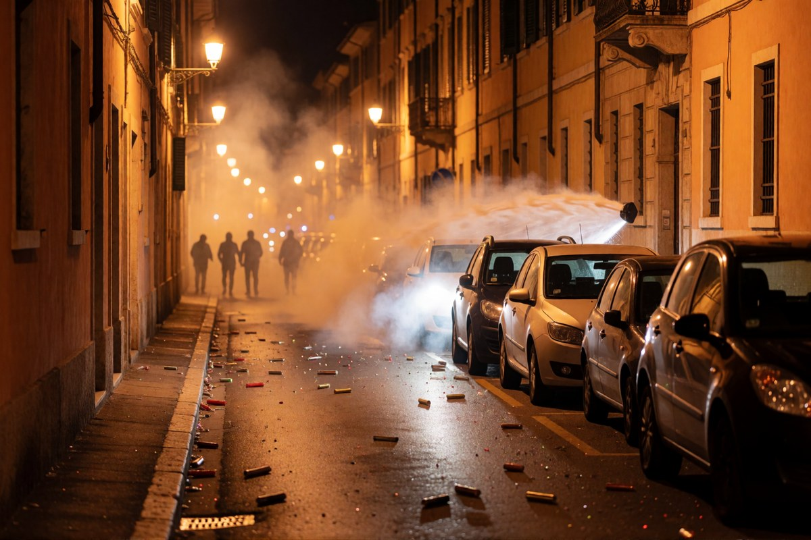

Cronaca · 22 novembre 2026
Askatasuna, trent'anni e una notte di scontri a Torino

Dopo la festa per i trent'anni del centro sociale, alcune centinaia di manifestanti hanno lanciato bottiglie e fuochi d'artificio contro la polizia a Vanchiglia. Idranti, lacrimogeni, una decina di identificati e nessun agente ferito.
di Franco Zanghì
Alcune centinaia di manifestanti del centro sociale Askatasuna hanno lanciato bottiglie e fuochi d'artificio contro la polizia, a Torino. È successo nella notte fra sabato e domenica, dopo la festa per i trent'anni del centro sociale. Lo racconta l'ANSA.
Era circa mezzanotte e mezza, nel quartiere Vanchiglia. Il corteo era partito da piazza Santa Giulia, dove nel pomeriggio c'erano stati incontri e concerti, e voleva arrivare all'edificio di corso Regina Margherita 47: la vecchia sede di Askatasuna, sgomberata il 18 dicembre dell'anno scorso e da allora presidiata dalle forze dell'ordine.
La polizia ha risposto con gli idranti e con un fitto lancio di lacrimogeni, in via Guastalla. Dopo circa mezz'ora è tornata la calma e il corteo si è sciolto. Questa volta, scrivono il Giornale e Quotidiano Nazionale, non ci sono agenti feriti.
Una festa senza autorizzazione
La Questura di Torino ha identificato una decina di persone e sta esaminando le immagini delle telecamere. Valuta anche la posizione di chi ha organizzato la manifestazione.
Né la festa né il corteo erano stati autorizzati, e nel pomeriggio la Questura aveva diffidato gli artisti annunciati sul palco. Gli attivisti, riporta il Fatto Quotidiano, hanno mandato un messaggio al ministro dell'Interno Matteo Piantedosi: «siamo ancora qua».
Non è un anniversario qualunque
Il 31 gennaio scorso, durante un corteo a sostegno del centro sociale, Torino aveva vissuto ore di guerriglia urbana: un mezzo della polizia dato alle fiamme con un agente ancora dentro, un altro poliziotto colpito anche con un martello.
Il 5 novembre sono scattate sedici misure cautelari, con accuse che arrivano al tentato omicidio. Sono accuse, e andranno provate in tribunale. Secondo CronacaQui, alla festa era annunciato anche un opuscolo su quella giornata, con una raccolta di solidarietà per gli indagati.
Già giovedì Augusta Montaruli, vicecapogruppo di Fratelli d'Italia alla Camera, aveva chiesto chi avesse autorizzato la festa in zona rossa, e l'aveva definita «uno schiaffo» agli agenti feriti. Dopo la notte di scontri, il sindacato di polizia Fsp ha chiesto che Torino non sia «ostaggio di chi sfida lo Stato», lamentando il silenzio del Comune.
Il punto
Trent'anni di storia si possono festeggiare, e nessuno chiede a un movimento di cambiare idea. Ma una festa che finisce con le bottiglie contro gli agenti non racconta un'esperienza politica: racconta un problema di ordine pubblico.
Va detto anche il resto: la polizia, questa volta, ha chiuso tutto in mezz'ora e senza feriti. E allora la domanda è una: quante notti come questa dovrà ancora mettere in conto Torino, a ogni anniversario?
Fonti
- ANSA e AGI, «Scontri Torino, corteo per i 30 anni Askatasuna: 10 identificati», 22 novembre 2026
- Il Fatto Quotidiano, «Askatasuna, 30 anni del centro sociale di Torino: tensioni nella notte», 22 novembre 2026
- TorinoToday, «Askatasuna celebra i 30 anni, corteo notturno per le vie di Vanchiglia: fuochi d'artificio, idrante e lacrimogeni in via Guastalla», 22 novembre 2026
- Quotidiano Nazionale, «Scontri a Torino per i 30 anni di Askatasuna: petardi e bottiglie contro gli agenti, una decina di identificati», 22 novembre 2026
- Il Torinese, «Torino, tensioni e scontri tra Askatasuna e polizia durante il corteo notturno», 22 novembre 2026
- Torino Cronaca, le richieste del sindacato di polizia Fsp, 22 novembre 2026
- Il Giornale e CronacaQui, le ricostruzioni del 21 e 22 novembre 2026
Le sedici misure cautelari del 5 novembre 2026 riguardano persone indagate, per le quali vale la presunzione d'innocenza: le accuse, compreso il tentato omicidio, dovranno essere provate in giudizio. Il numero degli identificati era quello comunicato dalla Questura alla data di pubblicazione e può cambiare con l'esame delle immagini.